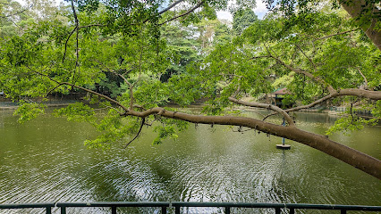
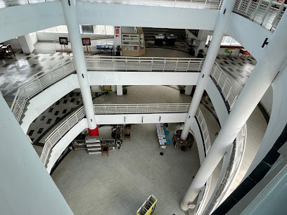
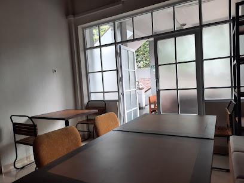
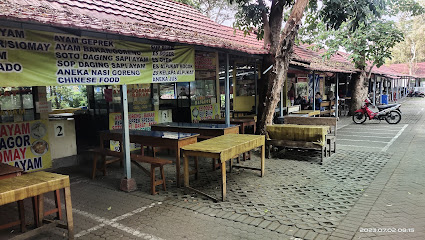

Cheicylia G H
Yogyakarta
Indonesia
Materi
Minggu ke-1
Pengantar SIG berbasis Web
- Dalam minggu 1 belajar mengenai cara internet bekerja. Client adalah perangkat yang melakukan akses terhadap website (orang/manusia yang mengakses juga dapat disebut client) . Server adalah perangkat keras maupun lunak komputer yang berfungsi untuk menyimpan halaman web pada alamat tertentu . Komunikasi antara klien dan server dilakukan dengan bahasa dan protokol tertentu . Komunikasi antara klien dan server membentuk internet
- Belajar menggunakan heading seperti
Heading 1
Heading 2
Heading 3
Heading 4
Heading 5
Heading 6
Minggu ke-2
HTML dan CSS
- Link ini mengarah ke website Teknik Geodesi
- Dalam minggu 2 belajar mengenai HTML (HyperText Markup Language) dan CSS (Cascading StyleSheet)
Minggu ke-3
Javascript sebagai Bahasa Client-side Scripting
- Dalam minggu ini belajar mengenai Javascript yang merupakan Bahasa pemrograman Web, framework, dan library.
Minggu ke-4
Bootstrap Framework
- Dalam minggu ini belajar mengenai bootstrap. Bootstrap menyediakan komponen yang sudah 'dibungkus' untuk memudahkan pembangunan web menggunakan HTML, CSS dan JS • Web yang dibangun dengan Bootstrap bersifat Responsive, artinya dapat dengan mudah menyesuaikan ukuran pada browser desktop atau mobile
Minggu ke-5
LeafletJS
- Dalam minggu ini belajar mengenai LeafletJS sebagai salah satu webmap API. Dibuat suatu halaman web sederhana pada LeafletJS
Minggu ke-6
LeafletJS lanjut
- Minggu ini membahas mengenai LeafletJS, yaitu penambahan layer, pengenalan format GeoJSON dan instalasi Plugin.
Minggu ke-7
Mobile GIS dengan input dan mergin
- Minggu ini membahas mengenai aplikasi Mergin Maps dan aplikasi QGIS. QGIS in pocket sebagai perangkat berbasis mobile, QGIS sebagai perangkat desktop serta Mergin sebagai aplikasi GIS berbasis online dapat digunakan sebagai sarana untuk pengumpulan data dari lapangan secara kolaboratif. Pengumpulan data menggunakan kombinasi ketiga perangkat tersebut dapat digunakan dalam kegiatan survei lapangan
Tabel
| Nama | NIM |
|---|---|
| Cheicylia G H | 20/460245/TK/50834 |
Peta Favorit di UGM
| Lokasi | Tautan | Gambar |
|---|---|---|
| Grha Sabha Pramana | GSP on Map |  |
| Wisdom Park | Wisdom Park on Map |  |
| Perpustakaan UGM | Perpustakaan on Map |  |
| Teknik Geodesi UGM | Teknik Geodesi on Map |  |
| Pusat Jajanan Lembah | Pusat Jajanan Lembah on Map |  |